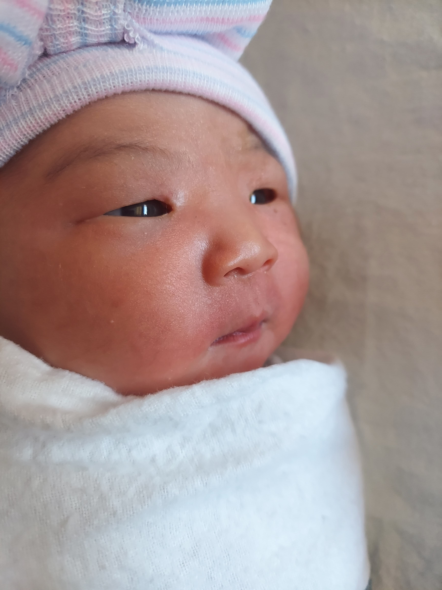

Birth

I gave birth!
My baby was born on September 2, 2025 at 10:55pm. It was a crazy labor but the baby came out healthy. So here's what happened:
On September 1, 2025 at 10pm I had my appointment for my induced labor. I went to Elmhurst Hospital with my husband and mom and checked in at the labor and delivery floor. I went in got undressed and put on a hospital robe to get checked by the nurses. After the quick check, I was moved to my personal room and my husband and mom joined me there. This must have been around midnight now, September 2, when nurses/midwives came in and they inserted a balloon into the cervix to try to dilate it. At first I denied epidural, but after the insertion of the balloon kept failing and was becoming painful, I got the epidural. This entailed a specialist to come in and inject the epidural, which wasn't as painful or scary as I thought it was going to be. After getting the epidural, the balloon was inserted and this time I didn't feel pain. For the next couple of hours my mom and husband tried to sleep in the chairs found in the room and I also tried to sleep for a bit. The details of the rest of the day are pretty fuzzy but by around 4 am, the balloon was out and then was given pitocin through an IV for the rest of the day. I believe my waters ruptured around 6am. The whole day I had awful contractions which I felt on right side only. I was told the epidural only half worked. I believe I was given another round of epidural in the afternoon, but again, details are fuzzy. My mom and husband tried comforting me by giving me massages and giving me sips of water. Eventually things progressed enough that I was ready to push around 8pm. By this time my doula had been with me for an hour or so and she had been helping me calm down and feel less anxious about this next part. Pushing a baby is not easy. It really tired me out after 2 hours of pushing the baby out. But while I was giving it my all to push, 2 things were happening.
- My cervix was not low enough. When I was pushing, baby had to travel too much.
- Baby was not responding well anymore to being pushed, her heart was sounding weaker, according to midwives/nurses.